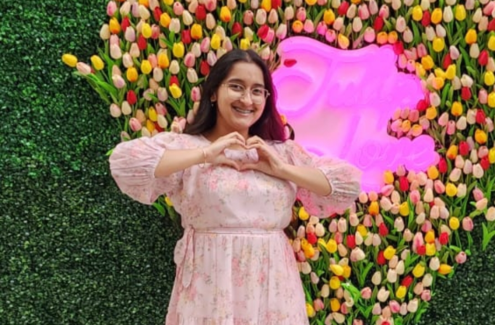
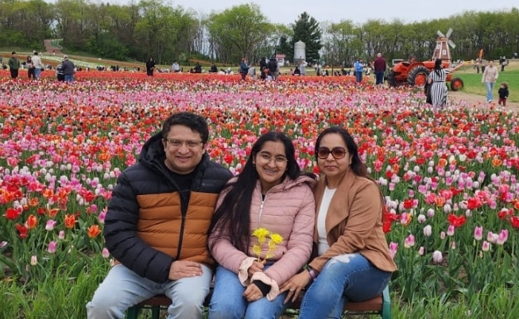

Hi! My name is Sharanya, and I moved to a public high school after two
years of homeschooling followed by two years in a private school. At the time of writing this blog,
I'm fourteen, but not for long. I wrote this four-week blog as a 20 Time Project for my English
class and to share with some of my friends who are eighth graders coming into high school.
I'm a freshman at Glenwood High School, and I'm very passionate about
music, medicine, science, foreign language, and computer science. I started coding at the beginning
of my fifth grade year, when I had just started homeschooling, and Covid-19 seemed permanent. Five
years, five code languages, and one country later, here I am!
I live with my mom and my dad, both of whom I love and look up to very
much - they're the ones who make sure I eat something after concerts, always have rides to where I
need to go, and midnight snacks for when I have biology tests. Whenever I have an event, concert, or
need some guidance, I know I can count on them.
My class schedule is Honors English I, Symphonic Band, Symphonic Choir,
Honors Biology, Spanish I, Lunch, Driver's Education, Honors Algebra II/Trigonometry. I'm also part
of Marching Band, Jazz Lab Band, Vocal Jazz Project, Titan Flame (our JV show choir), Medical Club,
Speech and Debate. Being part of a number of activities makes me so very happy as I enjoy being a
part of so many communities of people who all have similar interests.

